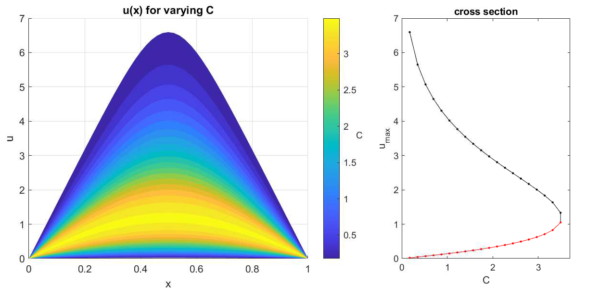

Bratu equation
The script file: example-bratu1d.jl
A 1D Bratu equation. This demonstrates the nonlinear solver capability using either symbolic or automatic differentiation. It also demonstrates using indexed variables.
Begin by importing and using the Finch module. Then initialize. The name here is only used when generating code files.
using Finch
initFinch("bratu1d");Then set up the configuration. This example simply sets dimensionality of the domain and polynomial order of the basis function space.
domain(1) # dimension
functionSpace(order=2) # polynomial orderUse the built-in simple mesh generator to make the mesh and set up all node mappings.
mesh(LINEMESH, elsperdim=50) # 50 uniform line segmentsDefine the variable, test function, and coefficient symbols.
u = variable("u", type=VAR_ARRAY, index=ind) # upper branch
l = variable("l", type=VAR_ARRAY, index=ind) # lower branch
testSymbol("v")
coefficient("C", cvals, type=VAR_ARRAY)Set an initial guess for the nonlinear iteration.
initial(u, init_str)
initial(l, "0.1*sin(pi*x)")The boundary conditions are specified.
boundary(u, 1, DIRICHLET, 0)
boundary(l, 1, DIRICHLET, 0)Set up the linearization and iteration parameters.
# linearize automatically using AD for the derivative
nonlinear(maxIters=100, relativeTol=1e-8, absoluteTol=1e-8, derivative="AD")OR
# linearize automatically using symbolic derivatives
nonlinear(maxIters=100, relativeTol=1e-8, absoluteTol=1e-8, derivative="symbolic")Then write the weak form expression in the residual form.
weakForm(u, "-grad(u[ind])*grad(v) + C[ind]*exp(u[ind])*v")
weakForm(l, "-grad(l[ind])*grad(v) + C[ind]*exp(l[ind])*v")Finally, solve.
solve(u)
solve(l)End things with finalizeFinch() to finish up any generated files and the log.